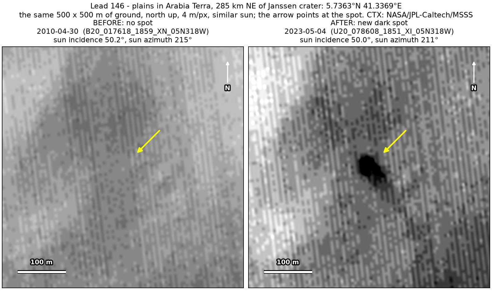
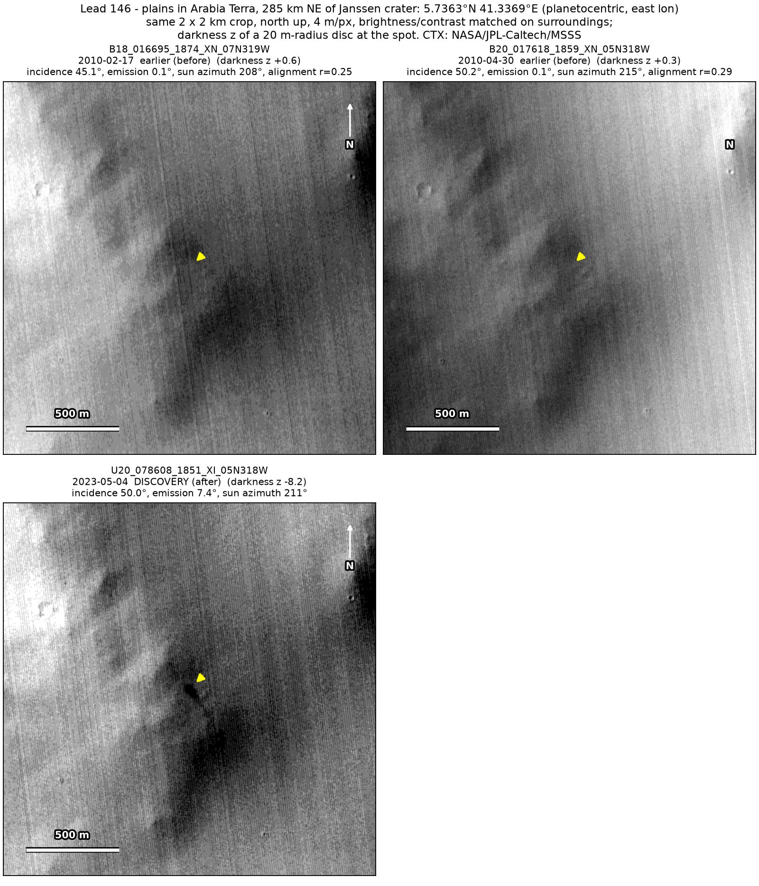
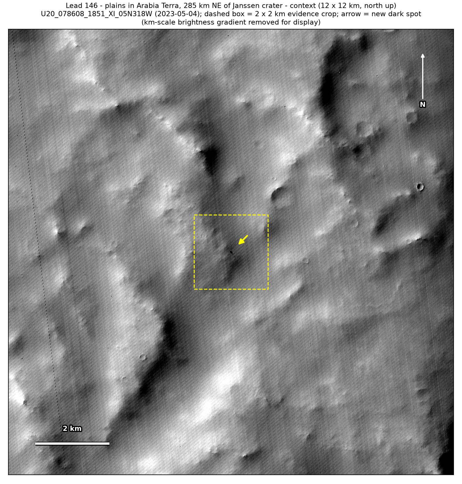

Professor of Mathematics
Paata Ivanisvili
Department of Mathematics, University of California, Irvine

← Possible new impact sites on Mars
Candidate 146: Plains in Arabia Terra, 285 km north-east of Janssen crater
Promising · roughly 50%

What changed. A compact dark spot about 40 m across, with a faint tail to the south-east, appeared on plains in Arabia Terra, 285 km north-east of Janssen crater, between April 2010 and May 2023. So far only one CTX image shows it.
Why it may be a new impact. Both earlier images, from 2010, show plain ground there, one of them under almost the same sun as the May 2023 image. In the new image the spot holds the darkest pixels within 220 m, and the change between the images is greatest at the spot. A compact dark core with a fainter tail on one side is the usual look of a small new impact on dusty ground.
- Location
- 5.736° N, 41.337° E
- Absent
- 17 February 2010 and 30 April 2010
- Present
- 4 May 2023
- Size
- Compact dark spot about 40 m across (48 × 40 m in the May 2023 image), with a faint tail reaching 60 to 90 m to the south-east
- Confidence
- Promising candidate: roughly 50% likely to be a new impact.
- Caveat
- Only one image shows it, so it is rated promising rather than strong. That image is strongly compressed, there is no dark mark nearby to show whether the earlier images would have caught a spot like it, and the earlier images line up only moderately well. No image from the high-resolution HiRISE camera covers it; the nearest ends 15.6 km away. Like every candidate here, it is unconfirmed: see the caveat.

